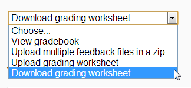

3.5. Running actions¶
Once an action has been created, it can be run. The meaning of this term is different for the various types of actions supported in OnTask.
3.5.1. Sending personalized emails (Personalized Text Actions)¶
Once you created a personalized text action and verified its content using the Preview button, save its content. The second operation in the left column runs the action.

If selected, the next page is a form requesting information about how to send the messages to the learners. The next figure shows an example of this page.

The fields in this form are:
- Column to use for target email address
OnTask needs to know where to send the email. It assumes that you have a column containing that information for each learner and it needs you to select that column.
- Email subject
A line to be included as subject of all the emails.
- Comma separated list of CC emails
A comma-separated list of emails to include in the carbon copy or CC email field.
- Comma separated list of BCC emails
A comma-separated list of emails to include in the blind carbon copy or BCC email field.
- Check/exclude emails
If selected, this option inserts an extra step in which you can eliminate certain emails form the action. This feature is useful to remove certain emails that cannot be removed with the filter.
- Send you a summary message
If you select this option OnTask will send you an email with the summary of this operation (number of rows in the table that were selected by the filter, number of emails sent, date/time of the operation, etc.
- Track email reading
Include in the messages a HTML snipped to detect if the email is read. OnTask adds an extra column to the table to store the number of times the message is opened. This detection relies on how the email client opens the message and processes the included images, therefore, the information in this column may not accurately reflect this information.
- Snapshot of the workflow
If you select this option, after the emails are sent, the platform returns you a file that contains a snapshot (picture) of the workflow. It basically freezes the content of the workflow and places it in a file given to you. You may take this file and import back the workflow. In this new workflow you can check the values and messages at the time the operation was executed.
If the option to Check/exclude emails has been selected, clicking in the Next button leads to a page where the list of emails is shown and the user can select some of them to remove from the operation. If this option is not selected, the operation to send the emails is sent to a queue for processing. The browser will show the record that contains the information about the status of this request.
3.5.2. Making personalized content available to learners¶
Sending a personalized text is just one possible way to make this content available to learner. Another one is to offer the content through a URL that can be given to the learners. To enable such URL click on the icon with three dots in the right most corner of a personalized text action.
You will see an operation labeled URL followed by either the word (Off) or (On). Select that operation. The following window shows the URL in which the content is available as well as the field to enable/disable it.

In order for the learners to be able to view their personalized content, they have to be users of the OnTask platform and their ID present in the data table. This functionality is conceived for a context in which OnTask authenticates users either through a corporate Single-sign on layer, or learners access the OnTask through the Learning Management System with a LTI interface (see Authentication).
3.5.3. Running a survey¶
After creating a survey action it can be used in two modalities: run by the instructor, or given to the learners to fill out the data. The first modality is used as a mechanism to capture instructor observations. For example, surveys run by the instructor can be used as an attendance capturing mechanism (if the instructor has a device or procedure to capture who is in attendance). If the Run operation is selected, OnTask shows a table with the learners selected for the action, and the values for the survey collected so far.

Each row contains the identifier of the student (in the previous table, the email) as a link. Instructors may click on a link available to enter the survey information or modify the already existing information for that learner.

After entering the information the list of students for which the data entry is still allowed.
3.5.3.1. Making the survey available to the learners¶
The second operation available for survey actions is to make available the URL to learners so that they individually enter the information themselves. The right-most column of the action table contains an icon with three dots that if selected shows a set of additional operations, and one of them has the text URL. If selected OnTask shows the URL for the survey, the possibility of enable/disable it, or even provide a date/time window for its availability.

Once enabled, you may send the URL to the students (you may even use a personalized text action for that). Once the students click on the action, and if they are allowed to connect to OnTask as basic users, after authentication, if their email is part of the table, they will see a form with the survey questions and after answering it, the values are automatically stored in the right row and column in the table.
These two survey actions are ideal to collect information about any aspect of a learning experience in a way that is centralized and available for further processing through personalized text actions. For example, users may choose from a predefined set of topics those that were more challenging. This information can then be used in a personalized text action to provide the adequate resources to each learner.
3.5.4. Sending personalized emails in Canvas¶
The execution of a Personalized Canvas Email action requires additional information as shown in the following figure:
- Column in the table containing Canvas ID values
This column is essential to send the emails to the platform as it is used to uniquely identify every Canvas user. The data can be obtained downloading the marks of a course as a CSV file and uploading/merging this column with the existing table.
- Email subject
The text to use as subject for the messages.
- Canvas Host
If there is more than one Canvas platform configured in OnTask, an additional pull-down menu will appear to select which one to use. If there is a single Canvas platform configured, it will be used by default and this field will not be shown in the form.
- Check/Exclude Canvas IDs before sending messages
If this option is selected OnTask adds an extra step to check the identifiers that will be used and offer the possibility of excluding some of them.
- Download a snapshot of the workflow
If selected, a snapshot of the workflow (data and actions) will be downloaded after the messages have been queued for delivery.
After introducing this data, OnTask will check if it has credentials for the user to access Canvas through its API. If not, the user will be redirected to a page in the Canvas Learning Management System to 1) authenticate, and 2) authorize OnTask to access the platform. If these steps are successful, the user is redirected back to OnTask and the messages are delivered. The credentials retrieved from Canvas will be reused for future executions of this action.
3.5.5. Sending personalized JSON objects to another platform¶
The operation to Run a personalized JSON action sends the objects resulting from the personalization to the given URL. The page to collect the information to run these actions is shown in the next figure:
The first field is the column to perform a last review of the elements to send and select some of them to exclude in an extra step. If the field is empty, this step is skipped. The second field is the token to use for authentication when sending the JSON objects to the URL given when editing the action. This operation assumes that such token has already been obtained and provides no additional functionality to execute that step as part of this operation.
Similarly to the email actions, once these fields are provided, the operation to send the JSON objects to the target URL is queued in a batch system for processing. The browser shows the record where the status of this request is reflected.
3.5.6. Creating a ZIP file with the personalized text (for Moodle)¶
The personalized text actions offer the possibility of creating a ZIP file containing one HTML file with the personalized text for every learner. The execution of this operation requires the use of two columns in the table and a suffix to create the file names. The operation is available clicking in the icon with three dots in the right-most column of an action in the action page. The additional information is requested through the form shown in the following figure.

The first part of the file name is taken from the values of a key column. The second part of the file name is taken from a second column (optional). Additionally, the user may include a third suffix to be used for the last part of the file name (if none is given the default suffix is feedback.html. For example if the first column has the values submission 01, submission 02, submission 03, the second column has the names John, Paul, Mary, and the file suffix is empty, the ZIP file will be created with three HTML files with names submission 01_John_feedback.html, submission 02_Paul_feedback.html and submission 03_Mary_feedback.html.
3.5.6.1. Uploading feedback files for a Moodle Assignment¶
One of the potential uses of the ZIP file generated from a personalized text action is to upload each file as personalized feedback of an assignment in a Moodle course. However, there are some requirements in the file names so that they are uploaded each to the appropriate location, namely:
The table must have column named
Identifierwith values starting with the wordParticipantfollowed by a white space and a unique number. This column can be extracted from a Moodle Assignment by downloading the grading worksheet:
The CSV file has two columns with names
IdentifierandFull name.
The two columns
IdentifierandFull namemust be merged with the current data in the workflow.Choose the column
IdentifierandFull nameas the first and second column respectively when generating the ZIP file. Make sure you select the optionThis ZIP will be uploaded to Moodle as feedback.Upload the resulting ZIP using the option
Upload multiple files in a zipin the Moodle Assignment.

{kind=link}
{kind=link}